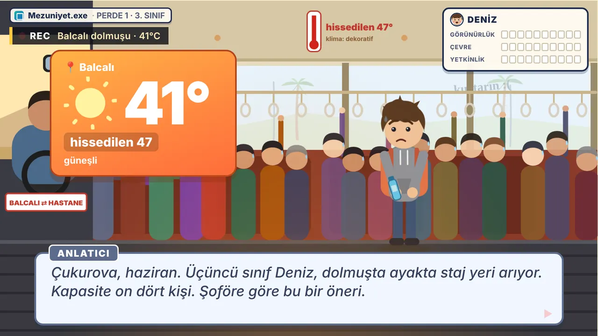
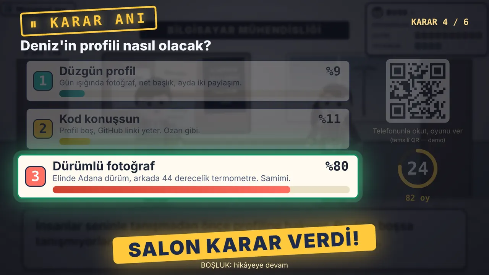
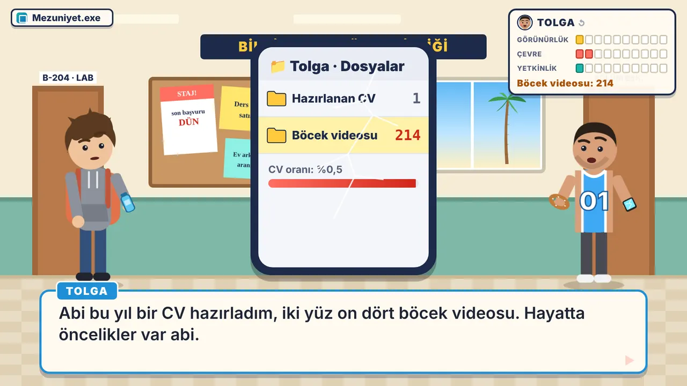
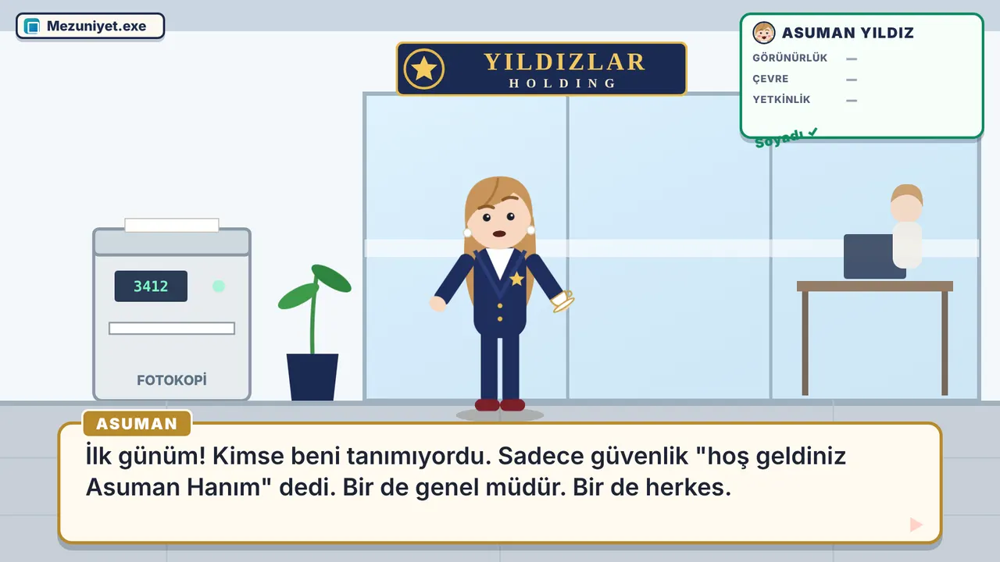
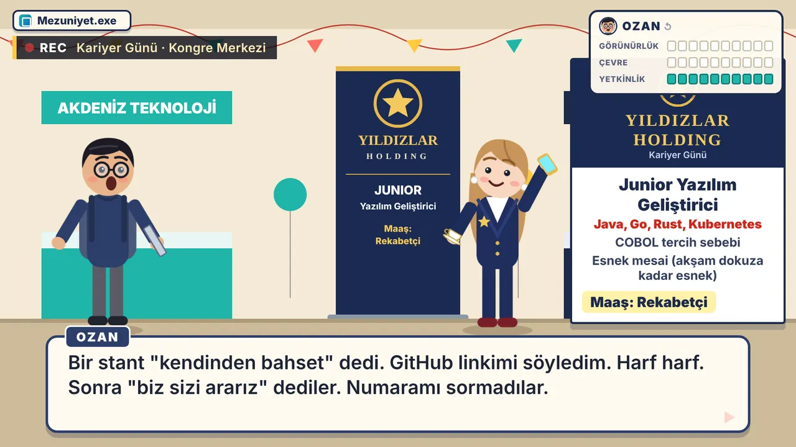
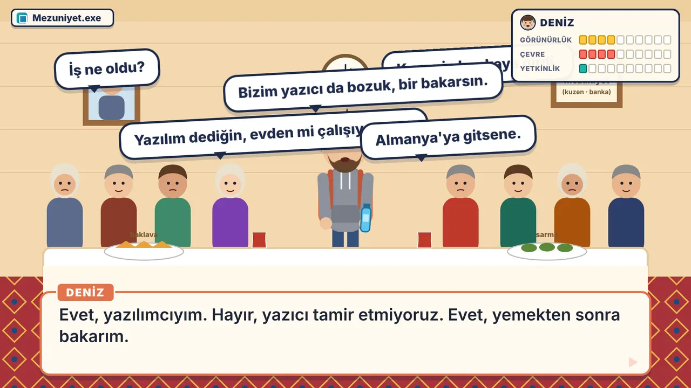
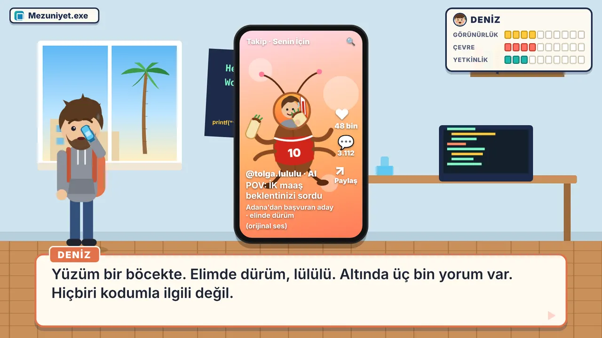
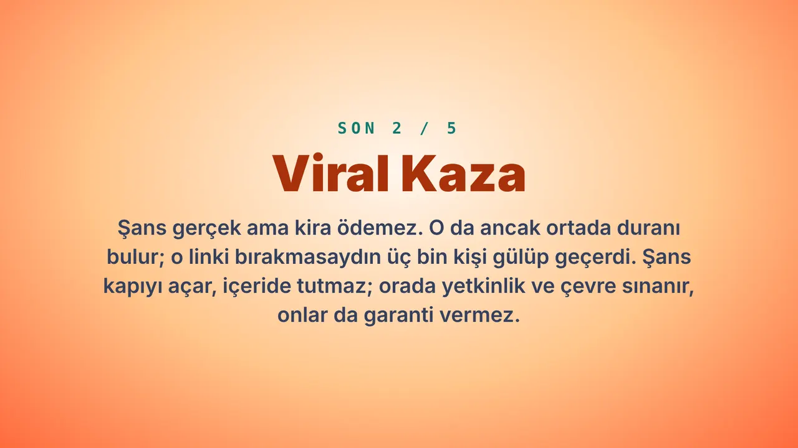
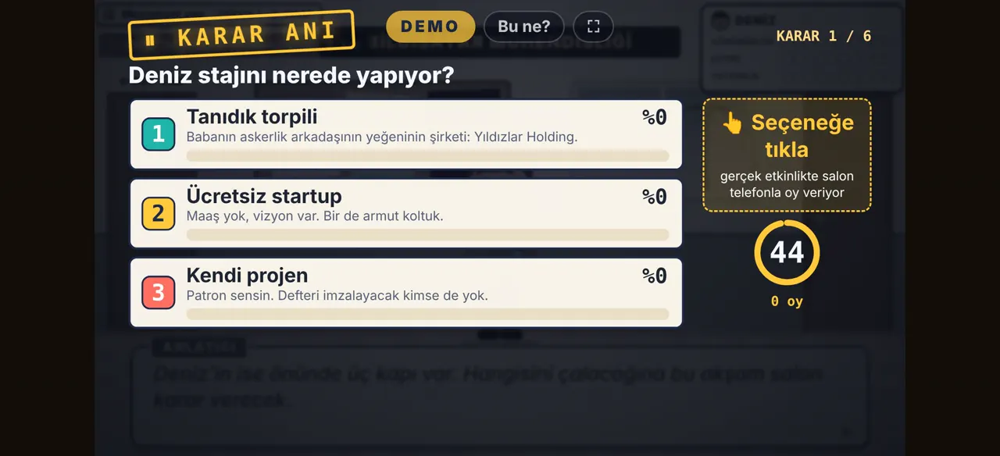

Mezuniyet.exe yanıt vermiyor.
Salonun telefonla oy verdiği, mezun olup iş aramak üzerine kara mizahlı interaktif bir animasyon.
Programı kapatırsanız kaydedilmemiş kariyeriniz kaybolabilir.
Tek kişilik demo: kararları sen veriyorsun. ~20 dk · sesi aç · telefonda yatay daha iyi.
Nasıl çalıştı?
Bir dizüstü, bir projeksiyon, salondaki herkesin cebindeki telefon. Uygulama indirmek yok, hesap açmak yok.
-
Projeksiyonda film gibi akar
Animasyonlu sahneler, seslendirilmiş replikler, müzik. Sunucu yalnızca bir tuşa basar; gerisini oyun kendi oynatır.
-
Karar anında QR çıkar
Salon telefonla okutur, 30 saniyede oy verir. Çubuklar perdede canlı dolar; fikrini süre bitene kadar değiştirebilirsin.
-
Hikâye salonun kararıyla dallanır
Torpil mi, ücretsiz startup mı, dürümlü profil fotoğrafı mı? Her seçim sonraki sahneleri ve sonu değiştirir.
Sayılarla
Perdeden kareler
Deniz, Ozan, Buse, Tolga ve Asuman: aynı bölümden beş mezun, beş ayrı strateji. Biri hariç hepsi iş arıyor.

Perde 1Kapasite on dört kişi. Şoföre göre bu bir öneri. 
Karar anıSalon oy verdi: dürümlü profil fotoğrafı. 
TolgaBir CV, iki yüz on dört böcek videosu. 
AsumanStaj yeri yirmi iki yıldır onu bekliyordu. 
Kariyer günüJunior aranıyor. Maaş: rekabetçi. 
BayramHayır, yazıcı tamir etmiyoruz. 
DalDürümlü fotoğrafın bedeli: viral bir böcek. 
Son 2 / 5Viral Kaza. Diğer dört sonu demoda bul. 
DemoTelefonda da oynanıyor: seçeneğe dokun, hikâye dallansın.


Teknik
Kulüp bütçesiyle, salon Wi-Fi'ının insafına kalmadan çalışsın diye olabildiğince sade.
- Tek dosya oyun motoruSahneler, karakterler, kamera, montaj ve hikâye ağacı tek bir
index.htmliçinde. Çatı yok, derleme yok. - Firebase Firestore ile gerçek zamanlı oylamaTelefonlar QR'dan oy sayfasına girer, oy anında perdeye düşer.
- Cloud Functions yokSayımı sunucu bilgisayar yapar; Firestore kuralları oyları korur. Sunucu tarafı kod sıfır.
- Çevrimdışı önbellekService Worker oyunu ve sesleri bir kez indirir; internet giderse oyun akmaya devam eder, karar kurayla verilir.
- Telefon kumandasıSunucu sahnede dolaşırken telefonundan ileri, geri, duraklat ve "bunu kazandır" diyebilir.
- Gemini TTS seslendirme146 replik, her karaktere ayrı ses ve yönerge ile yapay zekâ seslendirmesi.
Kulübünüz için
Etkinliğinizde salonu ekrana bağlayan bir şey mi arıyorsunuz?
- Bu oyunu kendi bölümünüze, şehrinize ve iç şakalarınıza uyarlayabiliriz.
- Ya da etkinliğiniz için sıfırdan yeni bir interaktif oyun kurabiliriz.
- Önce demoyu oynayın, sonra yazın.